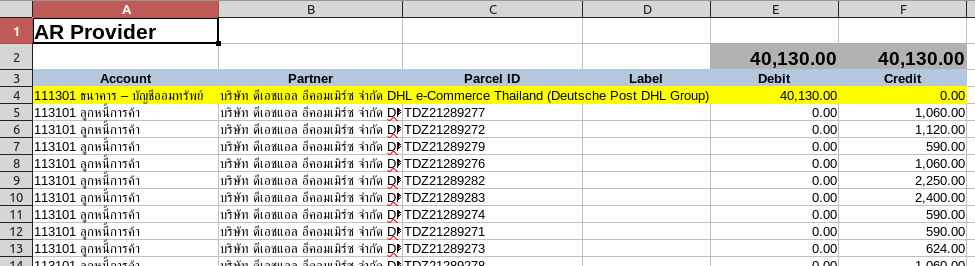
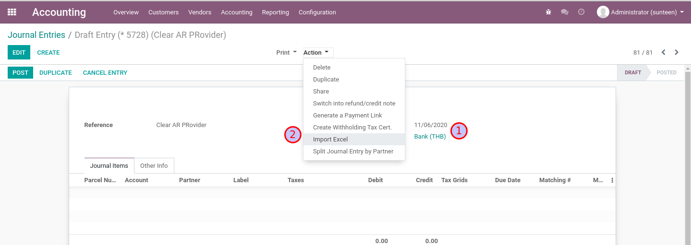

> Manual Payment
ระบบการเคลียร์หนี้ AR/AP
Mass Reconciliation
ในระบบของ 945 เพื่อให้การเคลียร์หนี้ (reconcile AR/AP) ทำได้อย่างรวดเร็ว เราจะใช้ฟังก์ชั่น Mass Automatic Reconcile
Menu: Accounting > Accounting > Actions > Mass Automatic Reconcile

Mass Reconciliation
ในทุกๆ Profile เราจะมีการเซตค่าตามรูป (ต่าง Account Code)

การทำงานของหน้าต่าง Mass Automatic Reconcile
- ตั้งชื่อ Profile และเลือก Account Code
- ตั้งกฏการ Reconcile ด้วย Partner และ Parcel ID
- แสดงรายการ journal items ที่ใช้ Account เดียวกันจะอาจถูก reconcile หากจับคู่ได้ตรงตามกฏ
- ทำการ Reconcile
- ดูรายการ Reconcile ล่าสุดที่เกิดขึ้น (ดูย้อนหลังได้ที่ tab History)
Note
เราสามารถตั้งค่า Scheduled Job ให้ทำงานเป็นช่วงๆแบบอัตโนมัติได้ด้วย
Clear AR Provider
เมื่อได้รับ Statement จากธนาคารว่าได้รับเงินเข้ามาจากลูกหนี้ของทาง 945 และต้องการเคลียร์ลูกหนี้ที่ค้างจ่าย
- เตรียมไฟล์ Excel จากระบบเพื่อการตรวจสอบ (optional)
- นำเข้า Statement ตามที่ได้รับแจ้งจากธนาคาร
- ทำการ Reconcile และตรวจสอบผลลัพธ์
1. เตรียมไฟล์ Excel จากระบบเพื่อการตรวจสอบ
Export journal items ที่สนใจมาเป็นค่าตั้งต้นหากต้องการเทียบกับ statement ที่ได้รับมา
- กรองรายการด้วย Favorite = AR Provider
- เลือกรายการที่ต้องการ Export
- คลิกเมนู Action > Export Excel โดยเลือก Template = AR Provider
1. เตรียมไฟล์ Excel จากระบบเพื่อการตรวจสอบ

Note
ขั้นตอนนี้เป็นขั้นตอนพิเศษเพื่อได้ข้อมูลทดสอบ การทำงานจริงข้อมูลจะมาจาก statement ตรงๆ
1. เตรียมไฟล์ Excel จากระบบเพื่อการตรวจสอบ
ตัวอย่าง Excel ของการ Export Excel - AR Provider โดยจะมีการ Switch Dr/Cr ไว้รอ
และจะมีการตั้ง Debit เข้าธนาคารเอาไว้ให้
โปรดตรวจสอบความถูกต้องก่อนทำการ Import เพื่อสร้าง Journal Entry

2. สร้าง Journal Entry ตาม statement ที่ได้รับแจ้งจากธนาคาร
- เตรียม Excel โดยใช้ข้อมูลจาก statement ที่ได้รับมา
- ที่เมนู Journal Entries สร้างรายการใหม่ ซึ่งจะทำหน้าที่เป็น Payment Entry
- ที่ JE, คลิกเมนู Action > Import Excel โดยเลือก Template = AR Provider
- ตรวจทานให้เรียบร้อยจึงก่อน Post
2. สร้าง Journal Entry ตาม statement ที่ได้รับแจ้งจากธนาคาร
สร้าง Journal Entry ใหม่เพื่อทำหน้าที่เป็น Payment Entry

2. สร้าง Journal Entry ตาม statement ที่ได้รับแจ้งจากธนาคาร
เพิ่มรายการด้วยการ Import Excel ตามที่ได้เตรียมไว้โดยเลือก Template = AR Provider

2. สร้าง Journal Entry ตาม statement ที่ได้รับแจ้งจากธนาคาร
ตรวจสอบให้แน่ใจ แล้วจึงค่อย Post (เฉพาะรายการที่ Posted แล้วเท่านั้นที่ Mass Reconcile จะสนใจ)
3. ทำการ Reconcile และตรวจสอบผลลัพธ์
- ที่เมนู Mass Automatic Reconcile เลือก Profile = 113101 ลูกหนี้การค้า
- กดปุ่ม Start Auto Reconciliation ระบบจะทำการ Reconcile รายการที่มี Partner และ Parcel ID เดียวกัน
- กดปุ่ม Display Items Reconciled On The Last Run เพื่อดูรายการที่ถูก Reconciled ไป
- หากต้องการยกเลิกสิ่งที่ทำไปให้ทำการ Reverse Entry
End.
Clear AP Commission
การบันทึกคู่บญชีอัตโนมัติของ Delivery Complete ได้ทำให้เกิดค่าคอมมิชชั่น ซึ่งทาง 945 ต้องทำจ่ายให้กันผู้ได้รับส่วนแบ่งที่เกี่ยวข้อง
- เตรียมไฟล์ Excel จากระบบ เพื่อการจ่ายค่า Commission
- นำเข้ารายการเพื่อสร้าง JE และ Split JE สำหรับแต่ละบุคคล
- ออก Withholding Tax Cert ให้กับผู้รับเงินพร้อมๆกัน
- ทำการ Reconcile และตรวจสอบผลลัพธ์
1. เตรียมไฟล์ Excel เพื่อการจ่ายค่า Commission
สำหรับ Commission จะดูตามวันที่ (เช่น ศุกร์ถัดไป) โดยสามารถค้นหาที่เมนู Journal Items ด้วย Filter ดังต่อไปนี้
- กรองรายการด้วย Favorite = AP Commission
- เลือกรายการที่ต้องการ Export
- คลิกเมนู Action > Export Excel โดยเลือก Template = AP Commission
1. เตรียมไฟล์ Excel เพื่อการจ่ายค่า Commission

1. เตรียมไฟล์ Excel เพื่อการจ่ายค่า Commission
ตัวอย่าง Excel ของการ Export Excel - AP Commission โดยจะมีการ Switch Dr/Cr ไว้รอ
และจะมีการตั้ง Debit เข้าธนาคารเอาไว้ให้ แต่ผู้ใช้งานต้องเพิ่มรายการ Withholding Tax ให้กับผู้รับ Commission เอง

2. นำเข้ารายการเพื่อสร้าง JE และ Split JE สำหรับแต่ละบุคคล
- เตรียม Excel และตรวจทานความถูกต้อง และสร้าง Journal Entries เพื่อทำ Payment Entry
- ที่ JE, คลิกเมนู Action > Import Excel โดยเลือก Template = AP Commission
- ทำการ Split Journal Entry สำหรับแต่ละผู้รับส่วนแบ่ง
2. นำเข้ารายการเพื่อสร้าง JE และ Split JE สำหรับแต่ละบุคคล
สร้าง Journal Entry ใหม่เพื่อทำหน้าที่เป็น Payment Entry
Import Excel ตามที่ได้เตรียมด้วย Template = AP Commission

2. นำเข้ารายการเพื่อสร้าง JE และ Split JE สำหรับแต่ละบุคคล
ในขณะที่ JE ยังมีสถานะ Draft ให้ทำการ Split Journal Entry by Partner, ระบบทำการ Split JE ตาม
จำนวนผู้รับส่วนแบ่ง (และลบ Journal Entry ตั้งต้นนี้)

2. นำเข้ารายการเพื่อสร้าง JE และ Split JE สำหรับแต่ละบุคคล
ในตอนนี้เราจะมี Journal Entries สำหรับผู้รับส่วนแบ่งทุกๆคน เพื่อเราจะได้สามารถออก WHT Cert. ได้พร้อมๆกัน
3. ออก Withholding Tax Cert ให้กับผู้รับเงินพร้อมๆกัน
จาก Journal Entries ทั้งหมดในขั้นตอนก่อน เลือก Action > Create Withholding Cert
3. ออก Withholding Tax Cert ให้กับผู้รับเงินพร้อมๆกัน
ระบบจะช่วยสร้าง Cert จากรายการที่บันทึก Account Code - WHT
3. ออก Withholding Tax Cert ให้กับผู้รับเงินพร้อมๆกัน
ระบบจะสร้าง Withholding Tax Certs ให้ตามจำนวนของ Journal Entry
ให้ผู้ใช้งานตรวจสอบความถูกต้องแล้วกดปุ่ม Done
3. ออก Withholding Tax Cert ให้กับผู้รับเงินพร้อมๆกัน
เลือก Print > Withholding Tax Cert เป็น PDF (สามารถ print ได้พร้อมๆกันหลายรายการ)

Note
ผู้ใช้งานสามารถดู Certificate. ทั้งหมดในภายหลังได้ที่เมนู Accounting > Vendors > WT Certificates
4. ทำการ Reconcile และตรวจสอบผลลัพธ์
- ที่เมนู Mass Automatic Reconcile เลือก Profile = 212101 เจ้าหนี้การค้า
- กดปุ่ม Start Auto Reconciliation ระบบจะทำการ Reconcile รายการที่มี Partner และ Parcel ID เดียวกัน
- กดปุ่ม Display Items Reconciled On The Last Run เพื่อดูรายการที่ถูก Reconciled ไป
- หากต้องการยกเลิกสิ่งที่ทำไปให้ทำการ Reverse Entry
End.
Clear AP Transport
- ย้ายเจ้าหนี้ประมาณการค่าขนส่งเป็นเจ้าหนี้ ด้วย Excel
- เลือกรายการที่ต้องทำจ่าย (ครบกำหนดวันที่ 15 ของ 2 เดือนหลัง) และ Export Excel ตั้งต้น
- ปรับปรุง JE และ Import Excel เพื่อสร้าง JE ล้างประมาณการเข้าเจ้าหนี้
- ทำการ Reconcile และตรวจสอบผลลัพธ์
- การเคลียร์เจ้าหนี้ โดยจะมีการหักภาษี ณ ที่จ่าย ภงด 53 ไว้ 1% ด้วย Journal Entry
- สร้าง Journal Entry ด้วย Template ที่เตรียมไว้ล่วงหน้า
- Manual Reconcile เพื่อเคลียร์เจ้าหนี้ขนส่ง
- ออกเอกสาร Withholding Tax Cert.
1.1 เลือกรายการที่ต้องทำจ่าย
รายการประมาณการค่าขนส่ง จะดูตามวันที่ 15 โดยสามารถค้นหาที่เมนู Journal Items
- กรองรายการด้วย Favorite = AP Transport
- เลือกรายการที่ต้องการ Export
- คลิกเมนู Action > Export Excel โดยเลือก Template = AP Transport Estimated

1.1 เลือกรายการที่ต้องทำจ่าย

1.1 เลือกรายการที่ต้องทำจ่าย
ตัวอย่าง Excel ของการ Export Excel - AP Transport Estimated โดยจะมีการ Switch Dr/Cr ไว้รอ
แต่ผู้ใช้งานต้องเพิ่มรายการปรับปรุงรายการเมื่อเทียบกับข้อมูล External เอง
1.1 เลือกรายการที่ต้องทำจ่าย
- ข้อมูลที่ Export ออกมาจาก Odoo
- ให้นำข้อมูลที่ได้จาก Transporter ใส่ที่ External
- ระบบจะเปรียบเทียบรายการที่ตรงกัน
- ให้ทำการลบรายการที่ไม่ตรงกัน
- ระบบได้ทำการคำนวนส่วนต่างค่าขนส่งให้เบื้องต้น แต่ผู้ใช้งานสามารถใส่ส่วนลดและอื่นๆได้เอง
1.2 Import Excel เพื่อสร้าง JE ล้างประมาณการเข้าเจ้าหนี้
สร้าง Journal Entry Vendor Bill ใหม่ แล้วจึงสร้างรายการด้วยการ Import Excel,
ทำการกำหนดวันที่ถึงกำหนดขำระ และใส่ Remarks เพื่อการอ้างถึงในภายหลัง

Note
ต้องตรวจสอบให้แน่ใจ แล้วจึงค่อย Post
1.3 ทำการ Reconcile และตรวจสอบผลลัพธ์
- ที่เมนู Mass Automatic Reconcile เลือก Profile = 212107 ประมาณการ - เจ้าหนี้การค้า
- กดปุ่ม Start Auto Reconciliation ระบบจะทำการ Reconcile รายการที่มี Partner และ Parcel ID เดียวกัน
- กดปุ่ม Display Items Reconciled On The Last Run เพื่อดูรายการที่ถูก Reconciled ไป
- หากต้องการยกเลิกสิ่งที่ทำไปให้ทำการ Reverse Entry
2.1 สร้าง Journal Entry ด้วย Template - Pay for AP Transporter
Menu: Accounting > Accounting > Create Entry from Template
ให้เลือก Template ให้ถูกต้องและกดปุ่ม Next

2.1 สร้าง Journal Entry ด้วย Template - Pay for AP Transporter
ใส่ข้อมูลตามรูป แล้วกดปุ่ม Create Journal Entry
2.1 สร้าง Journal Entry ด้วย Template - Pay for AP Transporter
ระบบจะช่วยสร้าง Journal Entry ให้ พร้อมๆกับช่วยคำนวน WHT 1% ด้วย

2.2 Manual Reconcile ลูกหนี้ค่าขนส่ง
Menu: Accounting > Accounting > Actions > Reconciliation
เราสามารถใช้หน้าต่างนี้ทำการ Reconcile รายการทั่วๆไป ในกรณีนี้เราต้องการเคลียร์เจ้าหนี้ของ Transporter
2.3 ออก Withholding Tax Cert ให้กับผู้รับเงิน
- จาก Journal Entry ในขั้นตอนก่อน เลือก Action > Create Withholding Cert
- ระบบจะช่วยสร้าง Cert จากรายการที่บันทึก Account Code - WHT
- ให้ผู้ใช้งานกรอกข้อมูลให้ครบแล้วกด Save ตรวจสอบความถูกต้องแล้วกดปุ่ม Done
- เลือก Print > Withholding Tax Cert เป็น PDF
End.
Clear AP Service
การบันทึกคู่บญชีอัตโนมัติของ Delivery Complete ได้ทำให้เกิดค่าบริการ ซึ่งทาง 945 ต้องทำจ่ายให้กับผู้ให้บริการ
- เลือกรายการที่ต้องทำจ่าย โดยดูตามวันที่ (ครบกำหนดวันที่ 15 ของ 2 เดือนหลัง) และนำไปสร้าง Journal Entry สำหรับการจ่ายเงิน
- ออก Withholding Tax Cert ให้กับผู้รับเงิน
- บันทึกเลขที่ Tax Invoice และทดสอบการออกรายงานภาษี
- ทำการ Reconcile และตรวจสอบผลลัพธ์
1. เลือกรายการที่ต้องทำจ่าย
รายการประมาณการค่าขนส่ง จะดูตามวันที่ 15 โดยสามารถค้นหาที่เมนู Journal Items
- กรองรายการด้วย Favorite = AP Service
- เลือกรายการที่ต้องการ Export
- คลิกเมนู Action > Export Excel โดยเลือก Template = AP Service

1. เลือกรายการที่ต้องทำจ่าย
1. เลือกรายการที่ต้องทำจ่าย
ตัวอย่าง Excel ของการ Export Excel - AP Service โดยจะมีการ Switch Dr/Cr ไว้รอ
แต่ผู้ใช้งานต้องเพิ่มรายการปรับปรุงรายการเมื่อเทียบกับข้อมูล External เอง
1. เลือกรายการที่ต้องทำจ่าย
- ข้อมูลที่ Export ออกมาจาก Odoo
- ให้นำข้อมูลที่ได้จาก Transporter ใส่ที่ External
- ระบบจะเปรียบเทียบรายการที่ตรงกัน
- ให้ทำการลบรายการที่ไม่ตรงกัน
- ระบบได้ทำการคำนวนส่วนต่างค่าขนส่งให้เบื้องต้น แต่ผู้ใช้งานสามารถใส่ส่วนลดและอื่นๆได้เอง
2. ออก Withholding Tax Cert ให้กับผู้รับเงิน
- จาก Journal Entry ในขั้นตอนก่อน เลือก Action > Create Withholding Cert
- ระบบจะช่วยสร้าง Cert จากรายการที่บันทึก Account Code - WHT
- ให้ผู้ใช้งานกรอกข้อมูลให้ครบแล้วกด Save ตรวจสอบความถูกต้องแล้วกดปุ่ม Done
- เลือก Print > Withholding Tax Cert เป็น PDF
3. Import Excel เพื่อสร้าง JE สำหรับการจ่าย
สร้าง Journal Entry Bank ใหม่ แล้วจึงสร้างรายการด้วยการ Import Excel

3. Import Excel เพื่อสร้าง JE สำหรับการจ่าย
- เนื่องจากมีรายการ VAT ที่ต้องการ Tax Invoice ระบบจะยังไม่ให้ Post
- ใส่ข้อมูล Tax Invoice
- ทำการ Post
4 ทำการ Reconcile และตรวจสอบผลลัพธ์
- ที่เมนู Mass Automatic Reconcile เลือก Profile = 212101 เจ้าหนี้การค้า
- กดปุ่ม Start Auto Reconciliation ระบบจะทำการ Reconcile รายการที่มี Partner และ Parcel ID เดียวกัน
- กดปุ่ม Display Items Reconciled On The Last Run เพื่อดูรายการที่ถูก Reconciled ไป
- หากต้องการยกเลิกสิ่งที่ทำไปให้ทำการ Reverse Entry
End.